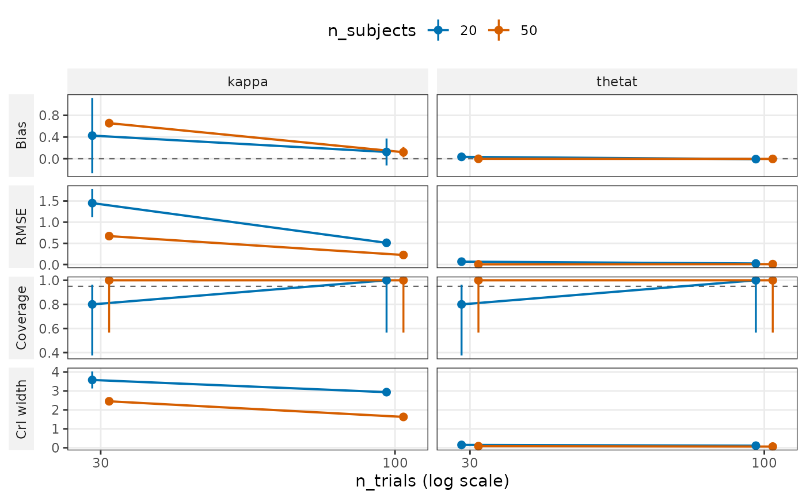
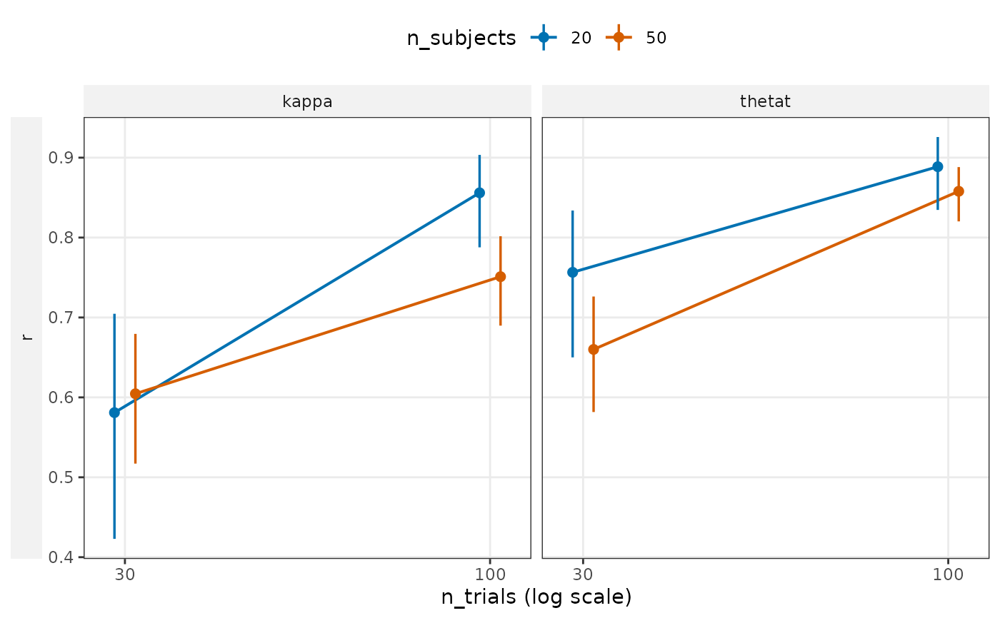
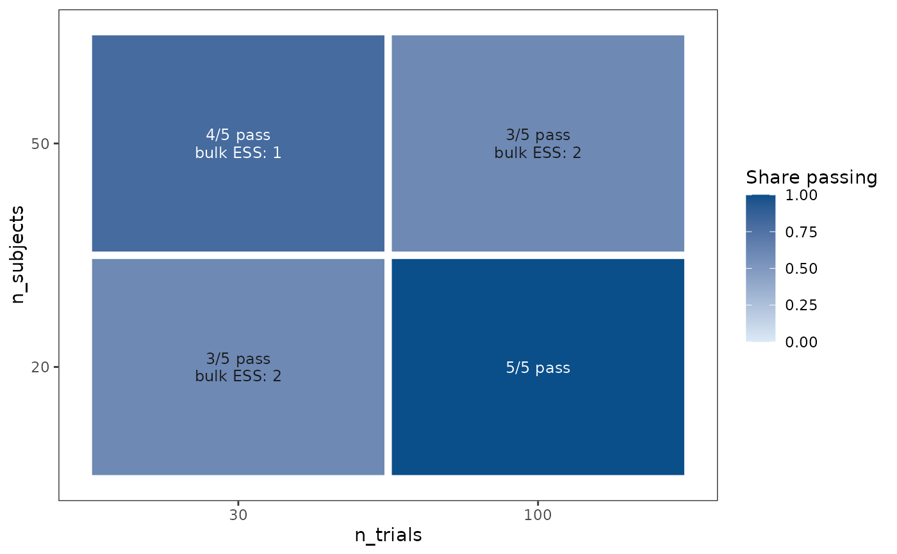

The picture a grid summary is read through: how a metric changes with
the design. type = "profile" puts a metric on the y axis against
trials per subject (a log axis), one line per number of subjects and a
panel per term and metric. type = "convergence" draws one tile per
design with the share of fits that passed the convergence gate and the
checks the others failed. type = "coverage" pools the intervals of
every design per term and level, the coverage check that does not
depend on ten replications per design. plot_recovery() shows the
estimates of one design against their truth.
Usage
plot_design(x, ...)
# Default S3 method
plot_design(x, ...)
# S3 method for class 'bmmtools_recovery'
plot_design(
x,
type = c("profile", "convergence", "coverage"),
level = "population",
metric = NULL,
x_axis = "n_trials",
color_by = "n_subjects",
...
)
# S3 method for class 'bmmtools_recovery_summary'
plot_design(
x,
type = "profile",
level = "population",
metric = NULL,
x_axis = "n_trials",
color_by = "n_subjects",
...
)Arguments
- x
A
bmmtools_recoveryobject fromrecovery_grid(), or its summary(). A summary draws profiles only.- ...
Not used.
- type
"profile","convergence"or"coverage".- level
For a profile, the level to draw:
"population","sd","subject", or"correlation"for the model correlations a grid run withcorrelationscarries.- metric
For a profile, the summary columns to draw, one panel row each, in this order.
NULLdraws bias, RMSE, coverage and CrI width for population means and SDs; r, the model-based reliability and coverage for subjects; bias, coverage, CrI width and the share of intervals excluding zero for correlations."pass_rate"and"fit_seconds"come from the grid's cells and are drawn withoutleveland without the other metrics.- x_axis, color_by
Design columns of the grid: the one on the x axis and the one that makes the lines (the rows and columns of the convergence tiles).
Details
A filter on x reaches the profiles of its rows and the model
correlations. The convergence tiles and the cell metrics draw the
designs x holds and count every replication of them: an errored fit
has no rows, so a filter on replications or on converged cannot be
read back from x, and a message says so. A design without rows
(every fit errored, or every fit in the replications x holds) is
still drawn, unless x was filtered by condition to designs whose
values it does not share; a message names it then. A filter that
removes every row of a design that ran in those replications removes
its tile.
A figure refuses a design column named like a column it is drawn
from: value, lower, upper, metric or colour_group
in a profile, pass, label or dark in the tiles, status,
converged, failed or fit_seconds in the tiles and the cell
metrics, and a column of the correlation summary at the correlation
level. Rename it in the grid.
Error bars
Each metric's bar has one source, stated here so that a figure can be read without the code:
bias: ±1 Monte Carlo standard error (MCSE), the SD of the errors over the replications / sqrt(R) (Morris et al., 2019, Table 6). None at the subject level, where the errors of one replication are not independent.rmse: ±1 MCSE of the MSE (Morris et al., 2019, Table 6) carried to the RMSE by the delta method, MCSE(MSE) / (2 RMSE). Not at the subject level.ci_width,ci_width_50,contraction: ±1 MCSE, the SD of the replications' means / sqrt(R).Rates (
coverage,coverage_50,detected,sign_recovery,rejection_rate,pass_rate, ...): a 95 % Wilson score interval, which stays inside 0 to 1 and is not empty at a rate of 1. The count is the number of replications that entered the rate (for sign recovery, those whose truth is not zero); from a summary, which has dropped them, its complete pairs. At the subject level it is the count behind the between-replication MCSE that summary() reports (the effective n ofsmallest_design()), or the replications at a rate of 0 or 1. A subject rate of exactly 0 or 1 has a between-replication MCSE of 0, which carries no count, so the interval at the replications is conservative: it can be much wider than at a rate just below 1.r: the pooled intervalr_lowtor_highof summary().reliability_model,reliability_true,reliability_gap,z_mean,z_sd: ±1 of the MCSE column summary() reports. At the subject level that MCSE counts every subject as independent and understates, soz_meantakes ±1 MCSE, the SD of the replications' mean z / sqrt(R), andz_sdhas no bar: it pools the subjects of every replication, so it also holds the spread between their mean z, which a bar from the replications' own SDs would leave out.fit_seconds: ±1 MCSE, the SD over fits / sqrt(fits).
Any other metric is drawn without a bar. From a summary, which has
dropped the replications, rmse, the widths, contraction and the
subject-level z_mean have no bar.
References
Morris, T. P., White, I. R., & Crowther, M. J. (2019). Using simulation studies to evaluate statistical methods. Statistics in Medicine, 38(11), 2074–2102. doi:10.1002/sim.8086
See also
plot_recovery() for the estimates of one design,
summary.bmmtools_recovery() for the numbers.
Examples
# population means across the four designs of the example grid
plot_design(recovery_mixture2p)

# subject parameters, and r alone
plot_design(recovery_mixture2p, level = "subject", metric = "r")

# how many fits passed the convergence gate, per design
plot_design(recovery_mixture2p, type = "convergence")
